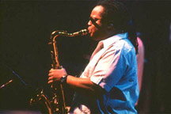

LeRoi and Carter have been jazz compatriots for years, playing together at paying gigs and informal jam sessions. "Jazz is probably my main influence," admits LeRoi, who also has classical training. "But at this stage I don't really consider myself a jazz musician." For him, DMB remains a challenge because there is room to explore, to respond to the expressions of the other four players. "I have plenty of space to improvise, to try new ideas," says LeRoi, whom Dave credits with arranging many of the songs he writes. "It's almost better than a jazz gig."
| Home | Audio | Lyrics | Dave Talk! | CD Trades | Biography | Links |